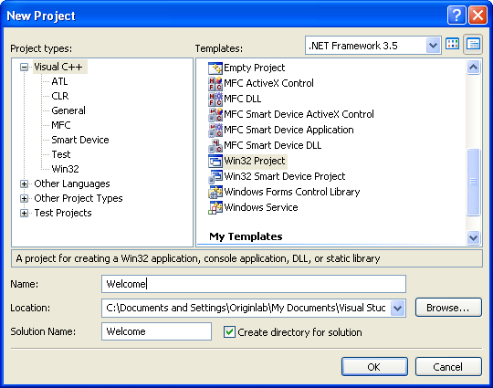
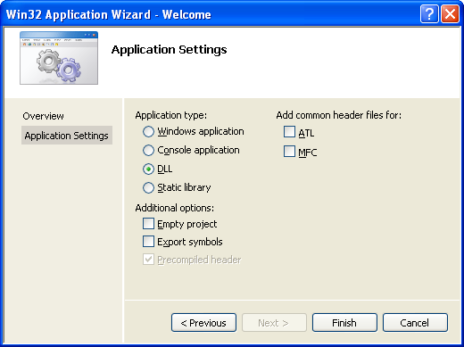
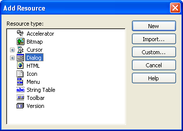
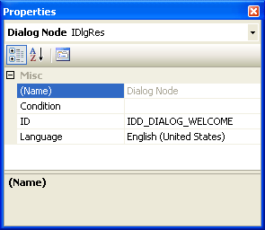
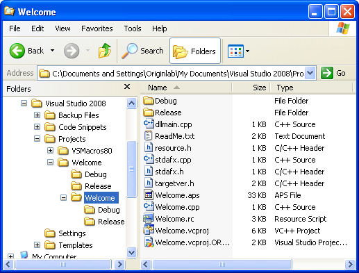

Hello Worldダイアログ
Hello WorldダイアログDialog Builder
VCでリソースDLLを作成する
Origin Dialog AppWizardで作成するDialog, Resource DLL Created by Origin Dialog AppWizard
- Visual C++ 6.0を開始し、ファイル->新規を選択し、新しいダイアログを開きます。プロジェクトタブで、Origin Dialog AppWizardを選択し、プロジェクト名を"ODialog"にセットし、場所を選択して、OKをクリックします。
- シンプルダイアログを選び、次へをクリックします。
- Origin Cを選択したまま、完了をクリックし、OKをクリックします。1つのシンプルダイアログを持つリソースファイルとそれに関連したソースファイルおよびヘッダファイルが生成されます。
- ビルド->アクティブな構成の設定メニューを選択し、デバックまたはリリースを選びます。
- ビルド->ODialog.dllのビルドを選択し、DLLを作成します。
- 上記で指定したファイルの場所に移動します。DLLファイルをDebugまたはReleaseフォルダの外側にコピーし、DLLファイルのパスをODialog.cppファイルのパスと同じにします。
- Origin CのコードビルダでODialog.cppファイルを開き、コンパイルし、DoMyDialog関数を実行して、ダイアログを開きます。
Dialog, Resource DLL Created by Win32 Dynamic-Link LibraryWin32 ダイナミックリンクライブラリで作成する
このセクションは、Visual C++ 6.0でリソースのみのDLLを作成する方法について説明しています。
- Visual C++ 6.0を開始し、ファイル->新規を選択し、新しいダイアログを開きます。プロジェクトタブで、プロジェクトテンプレートとしてWin32ダイナミックリンクライブラリを選択し、プロジェクト名をODialogにセットし、場所を選択して、OKをクリックします。現れたダイアログで、シンプルDLLプロジェクトを選び、完了をクリックします。
- プロジェクト->設定を選び、プロジェクト設定ダイアログを開きます。リソースタブで、ODialog.resのようなリソースファイル名をセットし、ソフトウェア設定に従って言語を選択し、OKをクリックします。
- 挿入->リソースを選び、プロジェクトにリソースを挿入します。ダイアログとそのコントロールに対して、ダイアログIDをIDD_OC_DIALOGにセットします。
- ファイル->名前を付けて保存を選び、リソーススクリプトをODialog.rcとして保存します。プロジェクト->プロジェクトに追加->ファイルを選び、ODialog.rcファイルを選び、プロジェクトに追加します。
- 言語が英語でなければ、このステップを行います。ワークスペースビューのリソースタブで、リストツリーを開き、IDD_OC_DIALOGを右クリックし、プロパティを選び、ダイアログで言語をニュートラルを選びます。
- デバッグまたはリリースの構成で、プロジェクト全体をビルドします。結果のDLLファイルが、DebugまたはReleaseサブフォルダに生成されます。
Dialog, Resource DLL Created by Visual Studio 2008Visual Studio 2008でリソースのみのDLLを作成する
Visual Studio 2008でリソースのみのDLLを作成する一般的な処理について説明しています。以下のステップは、OriginからOrigin Cを使ってアクセスするリソースのみのDLLをVS2008で作成する方法を示しています。
- Microsoft Visual Studio 2008を起動します。
- ファイル->新規->プロジェクトを選択し、新しいプロジェクトを作成します。
- 新しいプロジェクトダイアログで、プログラム言語としてVisual C++を選び、テンプレートとしてWin32プロジェクトを選び、プロジェクト名には"Welcome"とし、その場所を下記のように選択して、OKをクリックします。

- Win32アプリケーションウィザードダイアログで、アプリケーションの種類をDLLにして、完了ボタンをクリックします。

- プロジェクトのリソースビューに切り替え、プロジェクト名を右クリックして、リソースを追加し、リソースの種類はDialogを選択して、新規作成をクリックします。

- ソフトウェア環境に従って、リソースの言語プロパティをセットすることを忘れないようにしてください。英語のソフトウェアであれば、English(United States) です。

- 希望のコントロールを追加し、プロジェクトの構成をDebugまたはReleaseにし、プロジェクトを保存します。そして、ビルド>ソリューションのビルドまたはソリューションのリビルドを選び、プロジェクトをビルドします。 ソリューションフォルダにDLLを含む"Debug"または"Release"というフォルダが生成されます。このソリューションで生成したファイルは、次のものです。

Origin CでリソースDLLを使用するDialog, Use Resource DLL in Origin CModal Dialog
このセクションでは、上記で作成したリソースのみのDLLを使用する方法を説明しています。
- DLLファイルをDebugまたはReleaseフォルダの外側にコピーし、DLLファイルのパスをresource.hファイルのパスと同じにします。
- Originを起動し、コードビルダを開きます。
- DLLファイルのパスにtestODialog.cという新しいOrigin Cファイルが作成されます。現在のワークスペースに追加し、次のようにテスト用のコードを記述します。OpenDlg関数を実行し、ダイアログボックスを開きます。
#include <Dialog.h>
#include <..\Originlab\Resource.h> //ODialog リソースヘッダ
class MyDialog : public Dialog
{
public:
// ダイアログIDとDLL名を持つダイアログを作成
// "ODialog" はDLLファイル名
// パスを指定しなければ、DLLファイルがこのOrigin Cファイルと
// 同じパスにあるということ
// DLLが別の場所にある場合、DLLの
// フルパスを使用
MyDialog() : Dialog(IDD_OC_DIALOG, "ODialog")
{
}
};
void OpenDlg()
{
MyDialog odlg;
odlg.DoModal();
}